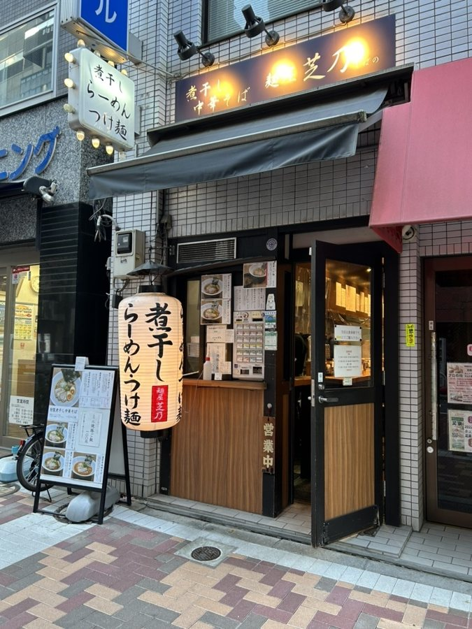
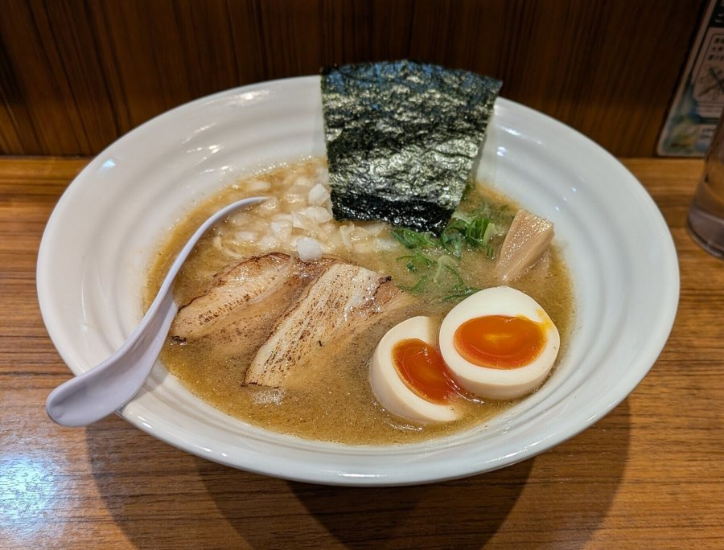

麺屋芝乃
Menya Shibano
ร้านราเมงขนาดเล็กใกล้ย่าน Shibakoen โดดเด่นด้วยเมนู Niboshi Chuka Soba และ Noko Niboshi Soba ที่ใช้น้ำซุปปลากะตักตากแห้งเข้มข้นกลมกล่อม หอมกลิ่นปลาแห้งชัดเจน จับคู่กับเส้นตรงนุ่มกำลังดี ในช่วงราคาประมาณ 800–1,100 เยน